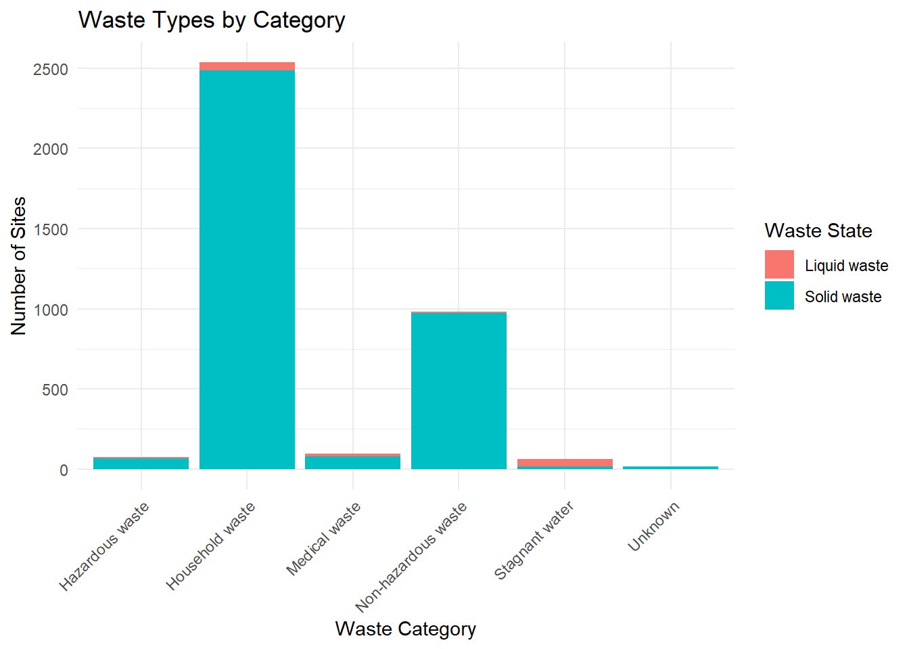
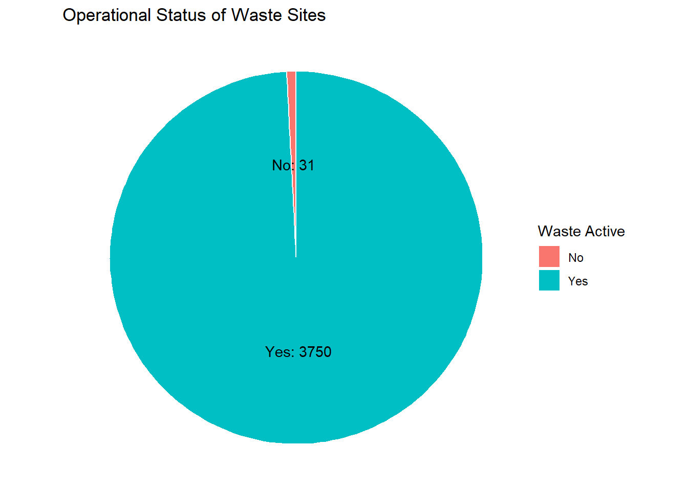

This dataset contains survey records on cemeteries, burial grounds, and waste disposal sites in Malawi. The information was gathered by enumerators using the mWater application with support from the World Food Programme (WFP). The primary purpose of this data collection was to map and document waste management sites and burial grounds in order to assess service coverage, evaluate environmental risks, and inform planning for safe and sustainable waste management.
Each record captures details on site location, operational status, management arrangements, and the history of site use. It also includes information on the type and state of waste present, evidence of pollution, sources of waste, and the population served by municipal facilities. Additional entries document the types of operations at municipal, commercial, industrial, and sludge waste sites, along with practices related to drinking water and waste water treatment.
This dataset supports evidence-based decision-making in waste management, environmental monitoring, and public health interventions.
Potential users of the data
Government agencies – to plan and regulate waste management infrastructure, cemetery management, and environmental protection policies.
Municipal councils and local authorities – to monitor service coverage, track landfill and cemetery operations, and identify gaps in waste disposal facilities.
Public health institutions – to study links between waste disposal practices, pollution, and health risks to nearby communities.
Environmental researchers and NGOs – to assess pollution risks, identify hotspots, and design interventions for safer waste and water management.
Development partners (e.g., WFP, UNICEF, World Bank) – to inform project design, evaluate service delivery, and target investments in infrastructure.
Academic institutions – to support research in environmental science, public health, and urban planning.
Community advocacy groups – to hold local authorities accountable and push for improved waste management services.
Installation
You can install the development version of wastedata from GitHub with:
# install.packages("devtools")
devtools::install_github("openwashdata/wastedata")
## Run the following code in console if you don't have the packages
## install.packages(c("dplyr", "knitr", "readr", "stringr", "gt", "kableExtra"))
library(dplyr)
library(knitr)
library(readr)
library(stringr)
library(gt)
library(kableExtra)Alternatively, you can download the individual datasets as a CSV or XLSX file from the table below.
- Click Download CSV. A window opens that displays the CSV in your browser.
- Right-click anywhere inside the window and select “Save Page As…”.
- Save the file in a folder of your choice.
| dataset | CSV | XLSX |
|---|---|---|
| wastedata | Download CSV | Download XLSX |
Data
The package provides access to cemeteries, burial grounds, and waste disposal sites in Malawi.
metadata
The dataset wastedata has 3781 observations and 29 variables
wastedata |>
head(3) |>
gt::gt() |>
gt::as_raw_html()| submitted_on | latitude | longitude | waste_active | type_of_wastesite | site_open_year | site_managed_local | site_close_year | site_years_open | waste_state | waste_category | pollution_evidence | solidwaste_source | municipal_pop_served | municipal_ops_type | municipal_ops_other | commercial_ops_type | industrial_ops_type | sludge_source | sludge_source_other | sludge_ops_type | sludge_ops_other | drinking_treatment | drinking_sludge_local | waste_water_treatment | waste_water_board_mgmt | waste_water_manager | waste_water_sludge_local | waste_water_category |
|---|---|---|---|---|---|---|---|---|---|---|---|---|---|---|---|---|---|---|---|---|---|---|---|---|---|---|---|---|
For an overview of the variable names, see the following table.
| variable_name | variable_type | description |
|---|---|---|
| submitted_on | character | Date when the record was submitted |
| latitude | numeric | Latitude coordinates of the waste site |
| longitude | numeric | Longitude coordinates of the waste site |
| waste_active | character | Indicates if the waste disposal site is currently active |
| type_of_wastesite | character | Type or category of the waste site cemetery municipal commercial industrial sludge |
| site_open_year | character | Year the site was opened |
| site_managed_local | character | Shows if the site is managed by local government |
| site_close_year | character | Year the site was closed |
| site_years_open | numeric | Total number of years the site was operational |
| waste_state | character | Physical state of the waste solid or liquid |
| waste_category | character | Category that best describes the type of waste |
| pollution_evidence | character | Indicates if there is evidence of pollution at or near the site |
| solidwaste_source | character | Source or origin of the solid waste |
| municipal_pop_served | character | Population served by the municipal waste site |
| municipal_ops_type | character | Type of operations conducted at municipal waste site |
| municipal_ops_other | character | Other specified type of municipal waste operations |
| commercial_ops_type | character | Type of operations conducted at commercial waste site |
| industrial_ops_type | character | Type of operations conducted at industrial waste site |
| sludge_source | character | Main source of sludge or mixed waste |
| sludge_source_other | character | Other specified source of sludge or mixed waste |
| sludge_ops_type | character | Type of operations conducted at sludge or mixed waste site |
| sludge_ops_other | character | Other specified type of sludge or mixed waste operations |
| drinking_treatment | character | Indicates if the site treats drinking water |
| drinking_sludge_local | character | Shows if drinking water sludge is disposed of locally |
| waste_water_treatment | character | Indicates if the site treats waste water |
| waste_water_board_mgmt | character | Shows if a Water Board manages the waste water treatment plant |
| waste_water_manager | character | Entity responsible for managing the waste water treatment plant |
| waste_water_sludge_local | character | Shows if waste water sludge is disposed of locally |
| waste_water_category | character | Category that best describes the waste water |
Example
library(wastedata)
# Visualization 1: Waste types
# Stacked bar chart: waste_state (Solid vs Liquid) by waste_category
# Purpose: Reveals dominant categories of waste and whether liquid waste is underrepresented.
library(dplyr)
library(ggplot2)
# Step 1: Clean and prepare the data
df_clean <- wastedata %>%
mutate(
# Group waste_state into Solid, Liquid, or Unknown
waste_state_grouped = case_when(
grepl("solid", tolower(waste_state)) ~ "Solid waste",
grepl("liquid", tolower(waste_state)) ~ "Liquid waste",
TRUE ~ "Unknown" # Combines Not Known, NA, or anything else into Unknown
),
# Standardize waste_category, combining Not Known and Unknown
waste_category_clean = case_when(
is.na(waste_category) | waste_category == "" ~ "Unknown",
tolower(waste_category) %in% c("not known", "unknown") ~ "Unknown",
TRUE ~ waste_category
)
) %>%
# Ensure no duplicate site entries per category/state combination
distinct(submitted_on, latitude, longitude, waste_category_clean, waste_state_grouped)
# Step 2: Aggregate counts for each category-state combination
waste_counts <- df_clean %>%
group_by(waste_category_clean, waste_state_grouped) %>%
summarise(count = n(), .groups = "drop")
# Step 3: Create stacked bar chart
ggplot(waste_counts, aes(x = waste_category_clean, y = count, fill = waste_state_grouped)) +
geom_bar(stat = "identity") + # Use identity since we already counted
labs(
title = "Waste Types by Category",
x = "Waste Category",
y = "Number of Sites",
fill = "Waste State"
) +
theme_minimal() +
theme(axis.text.x = element_text(angle = 45, hjust = 1)) # Rotate x-axis labels for readability
# Visualization 2: Waste site operational status
# Purpose: Show a comparison between active and non active waste sites
# Load libraries
library(ggplot2)
library(dplyr)
# Prepare data
# Replace NA with Not Known
status_data <- wastedata %>%
mutate(waste_active = case_when(
is.na(waste_active) ~ "Not Known",
waste_active == "" ~ "Not Known",
TRUE ~ waste_active
)) %>%
group_by(waste_active) %>%
summarise(count = n()) %>%
ungroup()
# Create pie chart
ggplot(status_data, aes(x = "", y = count, fill = waste_active)) +
geom_col(width = 1, color = "white") +
coord_polar(theta = "y") +
labs(title = "Operational Status of Waste Sites",
fill = "Waste Active") +
theme_void() +
geom_text(aes(label = paste0(waste_active, ": ", count)),
position = position_stack(vjust = 0.5))
License
Data are available as CC-BY.
Citation
Please cite this package using:
citation("wastedata")
#> To cite package 'wastedata' in publications use:
#>
#> Mhango E (2025). _wastedata: Waste Site Survey Data (2017 - 2018)_. R
#> package version 0.0.0.9000,
#> <https://github.com/openwashdata/wastedata>.
#>
#> A BibTeX entry for LaTeX users is
#>
#> @Manual{,
#> title = {wastedata: Waste Site Survey Data (2017 - 2018)},
#> author = {Emmanuel Mhango},
#> year = {2025},
#> note = {R package version 0.0.0.9000},
#> url = {https://github.com/openwashdata/wastedata},
#> }